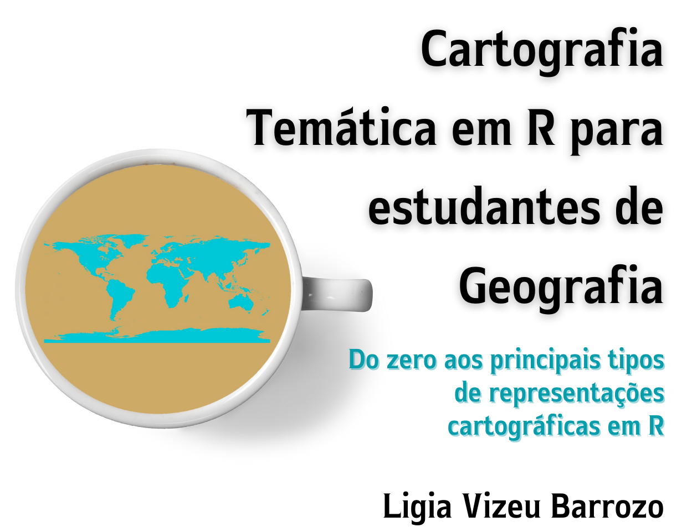

Cartografia Temática em R para estudantes de Geografia
2023-06-18
Apresentação

A Geografia é muito mais do que mapas, análises quantitativas, modelos de regressão. Sem dúvida! No entanto, tem se beneficiado muito com a elaboração de mapas, com análises quantitativas e modelos de regressão. É inquestionável. Análises quantitativas e qualitativas se complementam e ampliam a capacidade crítica de compreensão de um mundo em constante transformação.
Há 17 anos ensinando Cartografia Temática para o curso de Bacharelado em Geografia na Universidade de São Paulo, tenho acompanhado a evolução das geotecnologias. Hoje temos a disponibilidade de grande volume de dados. Nossa forma de análise tradicional, utilizando planilhas eletrônicas que podem abrir arquivos de até 1 milhão de linhas, já não atende as necessidades de nossas pesquisas. Estamos em uma nova encruzilhada promovida pelo avanço tecnológico. Por acreditar no potencial crítico e sintético do(a) geógrafo(a), encaro o desafio de contribuir para a aprendizagem e incorporação da programação na elaboração de mapas de forma mais acessível aos geógrafos(as) e outros profissionais que usam dados espaciais para a compreensão do mundo.
Penso que este livro pode cobrir uma lacuna que se situa na necessidade de o(a) geógrafo(a) aprender os primeiros passos do R para elaborar mapas temáticos. Neste caso, não estou preocupada em ensinar a fazer códigos limpos, bonitos e complexos, mas a ensinar como o aluno pode dar início à utilização do R, ao mesmo tempo em que aplica aspectos teóricos da Cartografia Temática na elaboração de seus mapas. Este livro surge junto com o meu próprio aprendizado ao tentar compilar inúmeros livros sobre R disponíveis, mas que não cumprem a função que preciso.
Fazer mapas não é sobre saber fazer código em R. O(A) geógrafo(a) pensa espacialmente. Precisa que os dados estejam representados cartograficamente para que sejam analisados, seja para a elaboração de hipóteses, seja para a comunicação de fenômenos espaciais, seja para testar hipóteses elaboradas previamente. Ao usar R para elaborar mapas, abre-se a possibilidade de explorar grandes bancos de dados e de permitir a reprodução exata dos procedimentos utilizados, garantindo transparência e avaliação criteriosa dos resultados obtidos. Em um mundo onde a Ciência é cada vez mais questionada, garantir a robustez e a transparência das análises contribui para que os resultados possam ser interpretados de forma correta e responsável. Além disso, segundo Comber & Brunsdom (2021), em uma ciência de dados crítica “não há desculpa para trituradores de números que não são críticos em sua análise de dados”.
Referência citada
Comber, L., Brunsdom, C. (2021) Geographical Data Science & Spatial Data Analysis: an introduction in R. Los Angeles: SAGE, 431p. https://study.sagepub.com/comber